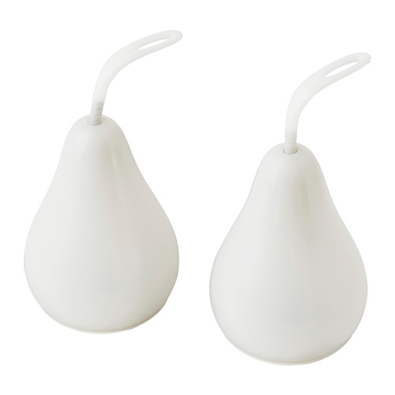

SOLVINDEN
LEDテーブルデコレーション, 洋ナシ形 ホワイト, 電池式
価格には消費税（8%）が含まれます。
商品の大きさ
直径: 5.4 cm
高さ: 10.1 cm
パッケージ個数: 2 ピース
この商品は組み立てが必要です
主な特徴
- どこでも使えます。ケーブルや電源プラグは必要ありません。
- 光源にLEDを採用。白熱電球に比べて消費電力が約85％少なく、20倍長持ちします
素材 & アイテムのサイズと重量
シェード: ポリカーボネイト樹脂
ハンガー: ポリプロピレンプラスチック
ベース: ABS樹脂
Read More
